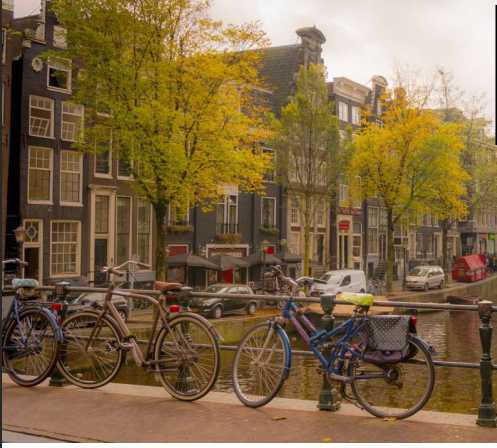
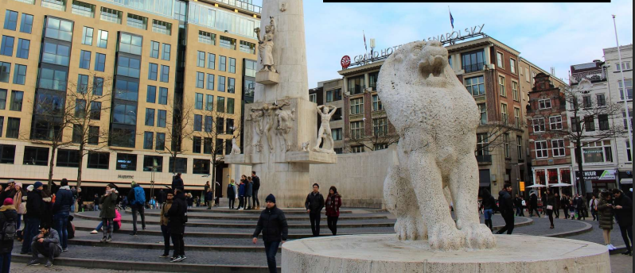
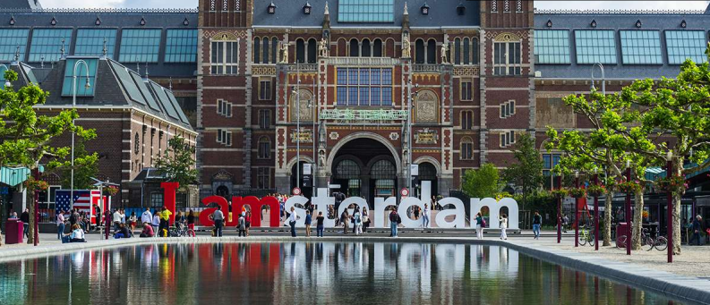

A m s t e r d a m
A cura di Alessandro Sava
Amsterdam e’ una citta’ comsopolita che allo stesso tempo mantiene le proprie tradizioni. Fu crocevia del commercio tra il Mare del Nord le Americhe e le Indie
Il Rijksmuseum
Come sappiamo Amsterdam non e’solo divertimento ma anche cultura con i suoi svariati musei. Rijksmuseum di Amsterdam è il museo piu’ visitato dei Paesi Bassi Ospita piu’ di 8000 opere d'arte, oltre che documenti e altri importanti oggetti legati alla storia olandese. Sebbene il museo come istituto esista dal 1800, è stato originariamente fondato all'Aia e trasferito nella capitale olandese pochi anni dopo la sua inaugurazione. La famosa collezione del Rijksmuseum e’ ora presentata in un modo completamente nuovo.
La storia del Rijksmuseum
Le gallerie ebbero origine da un museo esistente eretto nel 1808 dal fratello di Napoleone I, Luigi Bonaparte, re d'Olanda, e la prima collezione consisteva in dipinti che erano stati inviati in Francia dalla Nationale Kunst-Galerij, un museo d'arte fondato nel 1800. Dopo che i Bonaparte furono estromessi, la collezione fu installata nel Trippenhuis e fu aperta al pubblico nel 1815 come Rijksmuseum di Amsterdam.
Opere
Sebbene sia particolarmente incentrato sull'arte olandese del XVII secolo, il Rijksmuseum ha anche importanti collezioni di altre scuole di pittura e scultura dell'Europa occidentale, arte orientale e arti decorative. Annesso al museo e’ il Rijksprentenkabinet, che possiede una delle più belle collezioni europee di stampe e disegni, nonche’ manoscritti miniati.
Van Gogh
Il quadro richiama la grande tradizione olandese dell’autoritratto e consiste nella rappresentazione del volto di Van Gogh con una predominanza del colore giallo e del colore blu. L’autoritratto esprime un senso di urgenza espressiva tipico dell’artista che si evince dalle pennellate a virgola e rivela lo sguardo profondo e introspettivo dell’artista.
Van Gogh Museum
Come si puo’dimenticare del museo intitolato a lui il quale ospita la piu’ grande collezione al mondo di dipinti di Vincent Van Gogh e trasporta i visitatori in un affascinante viaggio attraverso la vita dell'artista e dei suoi contemporanei. Nel museo viene raccontata tutta la storia: l'artista, la sua epoca, le ambizioni di Van Gogh, le sue emozioni, i miti che lo circondano e la sua influenza fino ad oggi. La collezione del Museo Van Gogh comprende dipinti di e mostre d'arte in tutto il mondo di fama mondiale come I girasoli, Fiori di Mandorlo e Mangiatori di patate. Il museo organizza inoltre tre mostre temporanee all'anno. Tra i dipinti di Van Gogh vi sono soprattutto autoritratti, nature morte e paesaggi: cipressi, campi di grano e girasoli. Van Gogh si è suicidato all’eta’ di 37 anni dopo una vita in cui non sono mancate storie d'amore infelici e ripetute crisi depressive. Il grande pittore ci ha lasciato piu’ di 840 dipinti e 1000 disegni, molti acquerelli, litografie e schizzi attualmente conservati nel Museo di Van Gogh e in centinaia di altri rinomati musei.
Attrazioni divertenti
E ora vediamo le attrazioni più divertenti di Amsterdam

Heineken Experience
Una grande multinazionale e uno dei tre produttori di birra piu’ grandi al mondo, Heineken e’ stata fondata ad Amsterdam nel 1864. Per piu’ di cento anni, l’ottima qualita’ della birra Heineken e’ stata prodotta nel pieno centro della capitale olandese, fino al 1988, quando, a causa del forte odore di birra che si era diffuso su tutto il quartiere, l’impianto industriale e’ stato trasferito in periferia. Per quanto riguarda l'ex fabbrica di birra,e’ stata trasformata in un museo sensazionale, con molte attrazioni interattive che si sono aggiunte alle mostre, e che hanno portato a rinominare la struttura in Amsterdam Heineken Experience.
Un sorprendente edificio del diciannovesimo secolo con interni autentici, ospita spettacoli interattivi all'avanguardia, e tutto cio’ rende la vecchia fabbrica di birra Heineken una delle attrazioni turistiche piu’ famose di Amsterdam Questa e’ anche una grande occasione per vedere come viene prodotta la birra e seguire tutto il processo fino all'imbottigliamento. Durante il tour, gli ospiti hanno l'opportunita’ di scoprire come il marchio si e’ evoluto attraverso storici spot Heineken. Ma cio’ che rende questa esperienza davvero unica e’ un'attrazione molto emozionante dove gli stessi visitatori vengono trattati come la birra: vengono scossi, spruzzati d’acqua e sottoposti al calore! Al termine della visita, gli ospiti possono assaggiare il risultato del processo che hanno appena seguito preso il bar di degustazione.
Canali di Amsterdam
Esplorare Amsterdam con una crociera sui canali e’ il modo migliore per scoprire le sue bellezze, soprattutto se si ha poco tempo a disposizione. Si tratta di un’esperienza incantevole e affascinante: ricorda che i canali della capitale dei Paesi Bassi sono stati dichiarati Patrimonio Mondiale dell'Umanita’ dall'UNESCO. Amsterdam e’ costruita su una rete di canali artificiali lunga piu’ di cento chilometri, con circa 90 isole e 1.500 ponti. Scavati nel XVII secolo, formano cinture concentriche intorno alla citta’; lungo i canali si trovano 1550 edifici monumentali. Una crociera e’ sicuramente un'ottima scelta per ammirare la maggior parte delle attrazioni di questa splendida città.
Madame Tussauds Amsterdam
Sulla falsa riga del museo Madame Tussauds di Londra, nel museo di Amsterdam si puo' lasciare andare la propria immaginazione. Ci sono una multitudine di celebrita' tra cui Barack Obama, Cristiano Ronaldo, Bradd Pitt e la famiglia reale Olandese. L'edificio Peek & Clopenburg che ospita Tussauds, corrisponde nella sua architettura al vicino Palazzo reale. Un tetto grande e' stato aggiunto in cima all'edificio, per accogliere Claas Janszoon - la piu' grande figura di cera animatronica del mondo, 5 metri di altezza, posta proprio all'inizio della vostra visita.
Ripley's Believe It or Not! Amsterdam
E per finire non poteva mancare questa divertente e allo stesso tempo inquitante attrazione che offre cinque incredibili piani di meraviglie e stranezze. Visitate l'attrazione piu’ strana della citta’ e vedrete la testa rimpicciolita, la mascella di uno squalo megalodonte e il modello dell'uomo piu’ alto della storia. Scoprite i viaggi di Ripley e gli oggetti culturali e storici che vi sorprenderanno e stupiranno. L'attrazione include oltre 500 reperti e manufatti in 19 gallerie a tema. Visitate anche il teatro 5D in movimento. Prenotate i vostri biglietti online per il Ripley's Odditorium per vivere l'esperienza di questa attrazione unica in Piazza Dam nel cuore di Amsterdam.